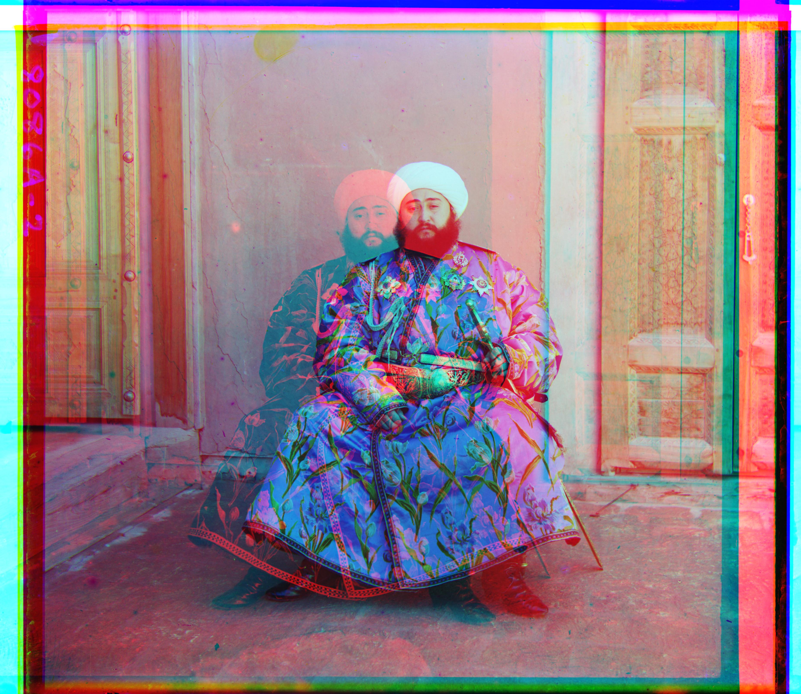

In the early twentieth century, Sergei Mikhailovich Prokudin-Gorskii captured numerous color photographs of regions all over the Russian Empire. He accomplished this by capturing each scene three times, each time through a red, green, or blue filter. The intention was to use these colored filters to physically project the three images together, producing a single colored image of the scene. The goal of this project is to use the digitized single-filter images to produce a digital colored image.
Aligning the image can be done using a simple x, y translation. Each scene is captured in three glass plates, so the first step is to separate them into three slides: blue, green, and red. Then, the red and green slides are aligned with the blue slide to form a single image.
In order to determine the displacement vector (x, y), I performed an iterative search over all pairs of pixels in the range -15 ≤ x, y ≤ 15, choosing the vector with the lowest total image difference. While I originally used Euclidean distance, I switched to Normalized Cross Correlation because it had better results for some of the images. When testing this implementation, I also realized that there was still some imperfect alignment due to the image borders impacting the metrics. To alleviate this, I only considered the middle 90% of pixels (essentially ignoring the borders), as that would be a clearer signal of alignment. This helped achieve near-perfect alignment for the smaller image files.
For larger images, the iterative search becomes too expensive since the range of pixels over which the search must be performed is too large. So, for such images, I modified the algorithm to search using an image pyramid. At each level of the pyramid, I refined the coarser alignment vector over a smaller search range (±5 pixels). This helped achieve near-perfect results for larger image files.
This algorithm worked on all images except for the Emir of Bukhara, which likely failed due to the vast difference in brightness values between the three color slides. To address this, instead of using NCC or Euclidean distance alone, I added an edge detection pre-processing step. This is because regardless of brightness, edges should remain the same between the slides. To detect edges, I convolved the image with the standard horizontal edge detection kernel ([[-1, -1, -1], [0, 0, 0], [1, 1, 1]]). This helped improve the results as shown below:
Before:

After:
Green offset: (2, 5)
Red offset: (3, 12)
Time: 0.45 sec
Green offset: (4, 25)
Red offset: (-4, 58)
Time: 5.26 sec
Green offset: (24, 49)
Red offset: (56, 104)
Time: 5.47 sec
Green offset: (17, 60)
Red offset: (13, 124)
Time: 5.31 sec
Green offset: (17, 41)
Red offset: (23, 89)
Time: 5.40 sec
Green offset: (21, 38)
Red offset: (35, 76)
Time: 5.31 sec
Green offset: (-2, -3)
Red offset: (-9, 75)
Time: 5.41 sec
Green offset: (-16, 41)
Red offset: (-29, 93)
Time: 5.49 sec
Green offset: (11, 82)
Red offset: (13, 178)
Time: 5.52 sec
Green offset: (2, -3)
Red offset: (2, 3)
Time: 0.44 sec
Green offset: (29, 79)
Red offset: (37, 176)
Time: 5.56 sec
Green offset: (-6, 49)
Red offset: (-25, 96)
Time: 5.77 sec
Green offset: (14, 53)
Red offset: (11, 112)
Time: 5.30 sec
Green offset: (3, 3)
Red offset: (3, 6)
Time: 0.46 sec
Green offset: (3, 35)
Red offset: (4, 98)
Time: 5.72 sec
Green offset: (3, 51)
Red offset: (-6, 104)
Time: 5.43 sec

Green offset: (10, 26)
Red offset: (11, 70)
Time: 5.48 sec